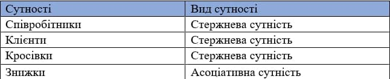
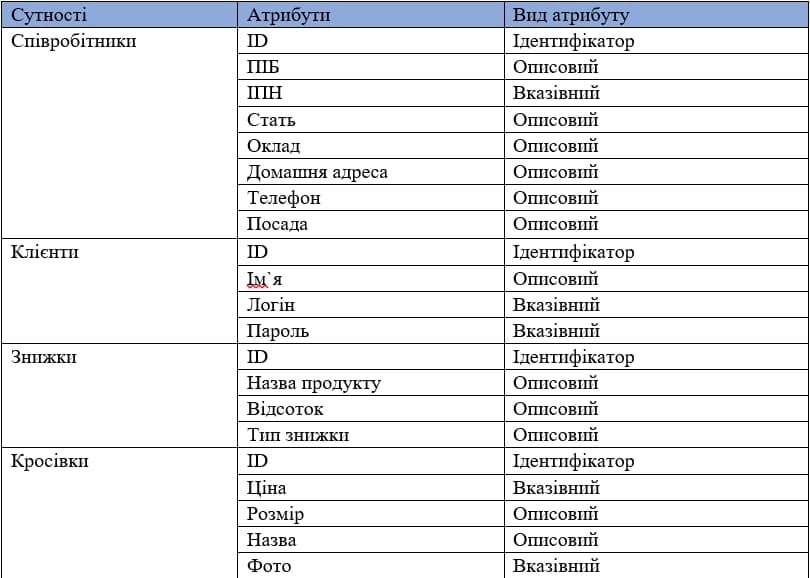
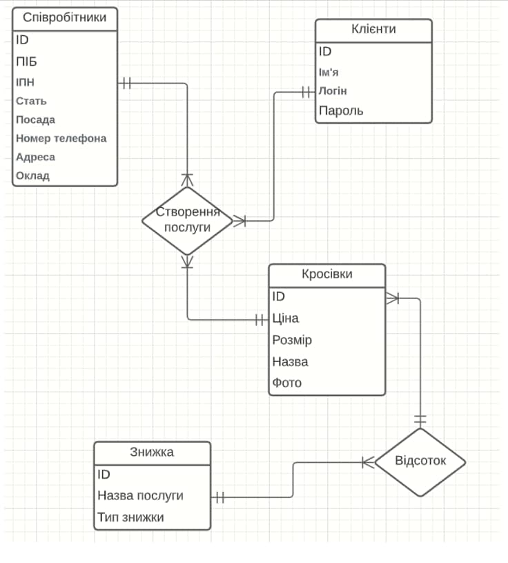
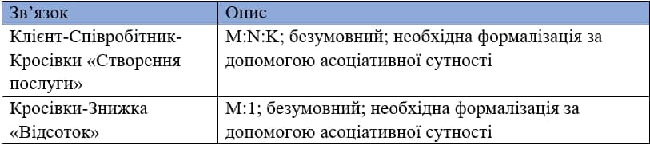
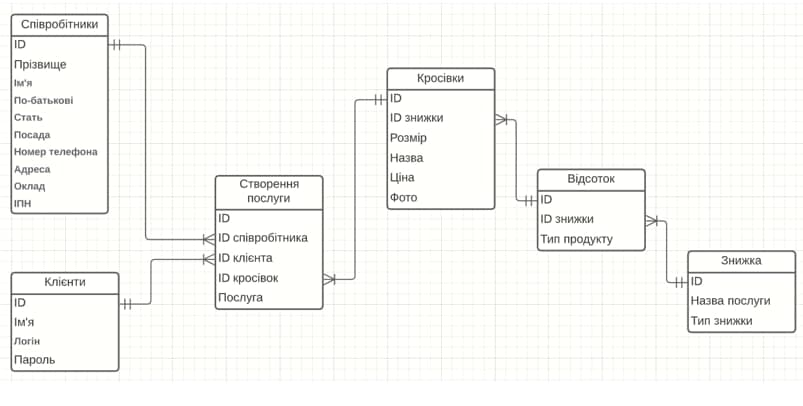

Аналіз предметної області
База даних створюється для інформаційного обслуговування співробітників магазину. БД повинна містити дані про співробітників, товар, замовлення, знижки та клієнтів.
Після аналізу предметної області можна виділити ряд сутностей, і приступити до проектування інфологічної моделі.
Далі надамо класифікацію сутностей та зв'язків інфологічної моделі


Інфологічна модель предметної області (модель локальних представлень, інфологічні моделі даних за локальними уявленнями).

Класифікація зв’язків :

Етап нормалізації. Аналізуючи атрибути моделі були знайдені явні
порушення:
1. Атрибут «ПІБ» - є складним та порушує 1НФ. Для приведення
відношення до 1НФ цей атрибут необхідно розбити на три атрибути:
«Прізвище», «Ім’я», «По-батькові»
Зауважимо, що так як в кожній сутності присутній ідентифікатор
(майбутній первинний ключ), то всі таблиці автоматично знаходяться у
2НФ. Також, враховуючи, що відсутні транзитивні залежності, всі таблиці знаходяться у 3НФ.
Тепер можемо приступити до даталогічного проектування. Даталогічна модель нашої бази даних :
